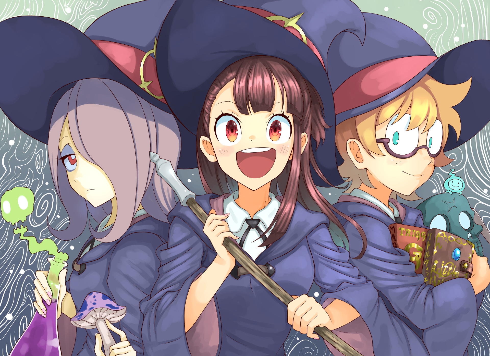
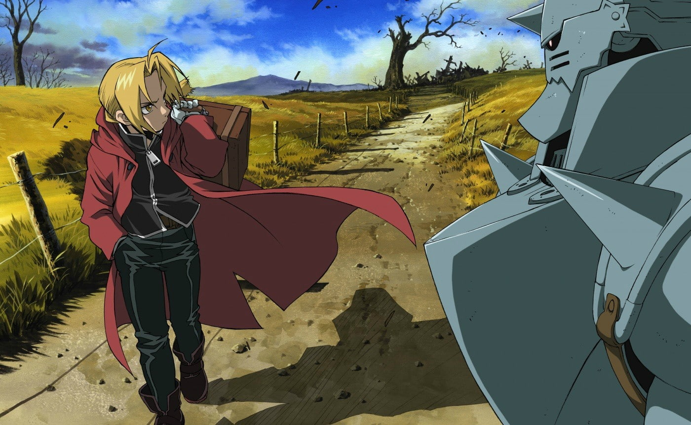
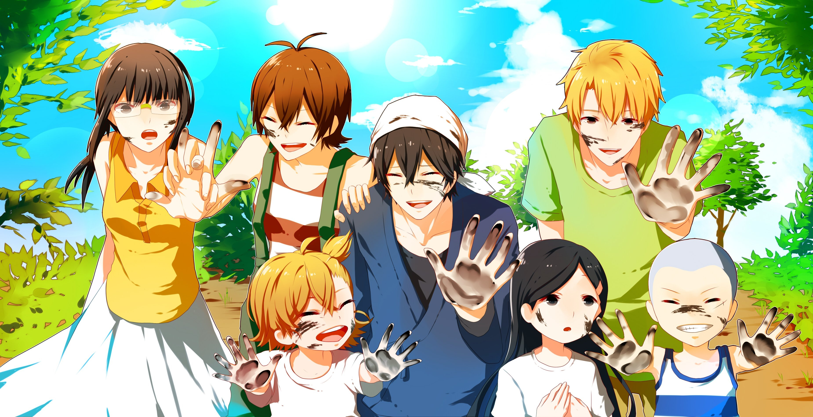
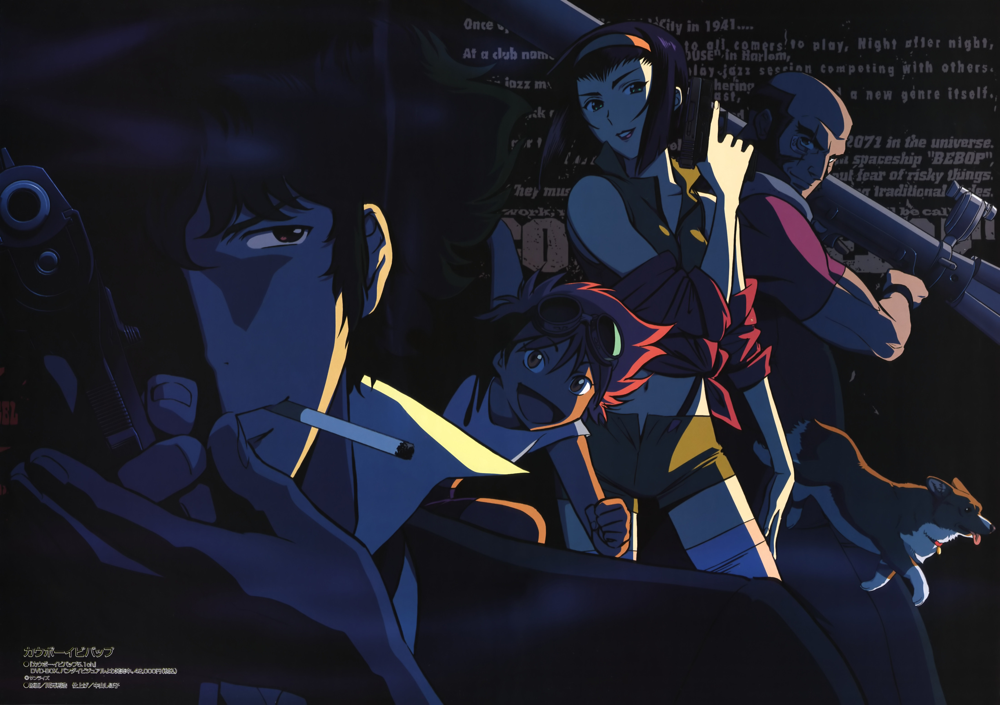
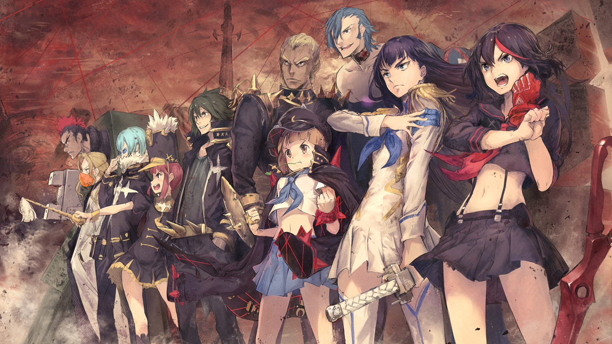
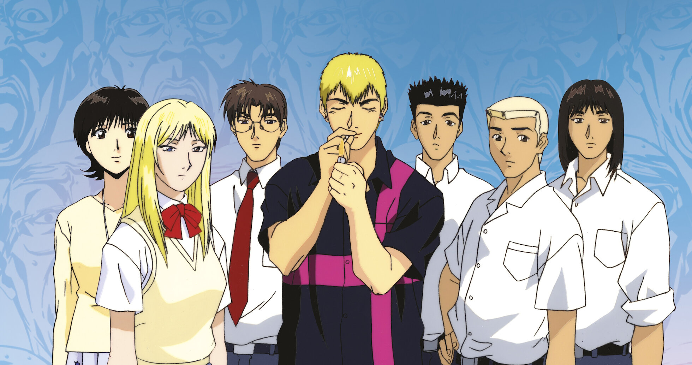
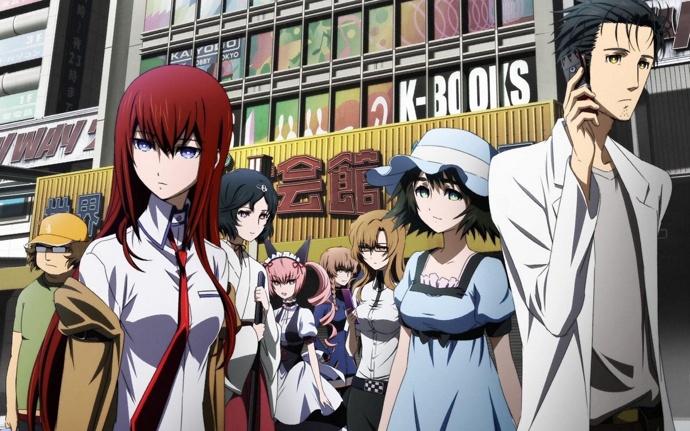

-

Little Witch Academia
Uma jovem bruxa sonha em se tornar como sua ídola, enfrentando desafios na academia mágica.
-

Fullmetal Alchemist
Dois irmãos usam alquimia para restaurar seus corpos após um experimento que deu errado.
-

Barakamon
Um calígrafo busca inspiração e autoconhecimento em uma pacata ilha rural.
-

Perfect Blue
Uma ex-idol enfrenta a perda de identidade e paranoia em um thriller psicológico marcante.
-

Cowboy Bebop
Caçadores de recompensas viajam pelo espaço em busca de aventuras e redenção.
-

Kill la Kill
Uma estudante luta contra uma escola autoritária em busca da verdade sobre seu passado.
-
Gintama
Em um Japão alternativo dominado por alienígenas, um samurai preguiçoso e seus amigos aceitam qualquer trabalho para sobreviver, misturando ação, comédia e paródias.
-

Great Teacher Onizuka
Um ex-delinquente sonha em ser o melhor professor do Japão e usa métodos nada convencionais para inspirar e mudar a vida de seus alunos problemáticos.
-

Steins;Gate
Um grupo de amigos descobre como enviar mensagens para o passado, desencadeando uma série de eventos que ameaçam a linha do tempo e suas vidas.
-

Gunsmith Cats
Rally Vincent e Minnie May, caçadoras de recompensas em Chicago, enfrentam criminosos armados enquanto equilibram ação explosiva e humor policial.